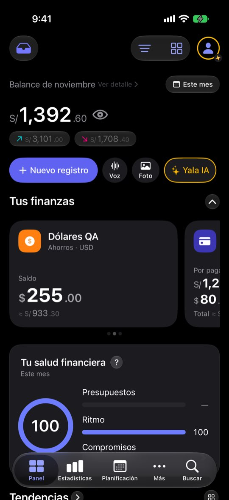
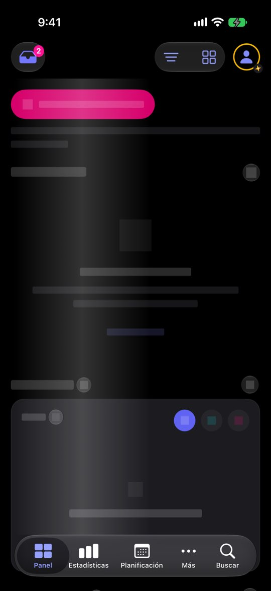

PN-9 · severidad Baja
Sin conexión, la tasa de cambio cae a una tabla y el «≈» no lo dice
El problemaEl Panel lee datos guardados en el teléfono, así que sin conexión se ve igual. Lo único que depende de la red son las tasas de cambio: si falta la del día, el conversor usa la anterior o una tabla fija, y la tarjeta pinta el mismo «≈» tenga o no una tasa real. No se pudo ver en pantalla: cortar la red del simulador habría cortado la del Mac entero.
Caso ficticio de la revisión. Semilla de pruebas
ficha con el reloj del simulador en el 20 de noviembre de 2026: cuatro cuentas (Ahorros USD $33,615 · Cuenta Principal S/ −53,738.91 · Efectivo S/ 380 · Tarjeta de crédito S/ 1,284.30 por pagar), balance de noviembre S/ 6,882.40 (entró S/ 12,910.40, salió S/ 6,028), saldo total S/ 64,690.04 y una nota de salud de 99. El saldo negativo de la Cuenta Principal sale de cómo la semilla reparte dos años de gastos; aquí sirve para ver qué hace el Panel con una cuenta en rojo. Ninguna cifra es de una persona real.lo que cambia frente a hoydónde toca la personaObservado captura o código leídoHipótesis nadie lo midióNo validado falta verlo en pantalla
Lo que se ve hoy
- Observado Código: la tarjeta descarta la calidad de la tasa (AccountCardView.swift:350 y 375; CurrencyConverter.swift:497-518)
- No validado En pantalla: no validado
- Hipótesis Con tasas viejas el total en soles puede moverse sin que la persona sepa por qué
Hoy · cuenta en dólaresCaptura

«≈ S/ 933.30»: la misma marca para cualquier tasa.
Hoy · cargandoCaptura

Carga: esqueleto genérico ~1 s antes de los datos.
Alternativas
Todas con el mismo caso. Las cifras salen de las capturas salvo donde la maqueta dice «ilustrativo».
PN-9·A
La tasa dice su fecha
Cuando la tasa no es de hoy, la conversión dice de qué día es.
A · La tasa dice su fechaMaqueta
9:41
2
Balance de noviembreVer detalle ›Este mes
S/6,882.40
S/12,910.40S/6,028.00
Tus finanzas
Ahorros USDAhorros · USD
$33,615.00
≈ S/ 119,333.25 · tasa del 18 novBajo la conversión, de qué día es la tasa usada. Solo cuando no es de hoy.
A favor
- Información donde se usa
- Sirve también con conexión si el proveedor falla
En contra
- Más texto en la tarjeta
PN-9·B
Aviso discreto
Una línea arriba del Panel mientras no haya conexión y haya cuentas en otra divisa.
B · Aviso discretoMaqueta
9:41
2
Balance de noviembreVer detalle ›Este mes
S/6,882.40
S/12,910.40S/6,028.00
Tus finanzas
Ahorros USDAhorros · USD
$33,615.00
≈ S/ 119,333.25Una línea arriba solo cuando no hay conexión y alguna cuenta está en otra divisa.
A favor
- Explica todo de una vez
En contra
- Otro aviso en el Panel, que ya tiene varios
PN-9·C
Dejarlo como está
Documentar y esperar a que alguien lo note.
C · Dejarlo como estáMaqueta
9:41
2
Balance de noviembreVer detalle ›Este mes
S/6,882.40
S/12,910.40S/6,028.00
Tus finanzas
Ahorros USDAhorros · USD
$33,615.00
≈ S/ 119,333.25El Panel funciona sin red; solo cambia la calidad de la tasa, que hoy no se ve.
A favor
- Cero esfuerzo
En contra
- El «≈» sigue diciendo lo mismo para una tasa real y una de tabla
Lado a lado
| A | B | C | |
|---|---|---|---|
| Explica la tasa | Sí | Sí | No |
| Añade ruido | Poco | Sí | No |
Recomendación
A, y antes, comprobarlo en el iPhone de pruebas en modo avión (lo que no se pudo hacer aquí).
Decide Jürgen
¿La conversión dice la fecha de la tasa (A)? ¿Se valida antes en el iPhone en modo avión?
Revisión por vistas 2.3 · Panel · 7-nov-2026. Capturas del simulador (build Debug de origin/2.3, iPhone 17 Pro e iPad Pro 13, iOS 27.2, modo oscuro, datos ficticios). Los siete perfiles son lentes simuladas, no entrevistas.